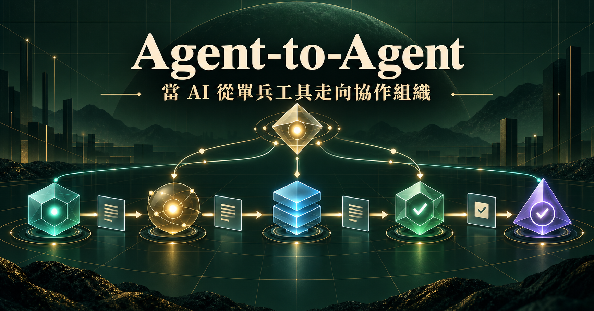

過去使用生成式 AI，通常是一個人對一個模型下指令。但當任務橫跨需求分析、研究、程式開發、測試與部署時，把所有責任交給同一個 Agent，就像要求同一名員工出題、作答，最後再替自己打滿分。

一句話理解 Agent-to-Agent
單一 Agent 像一名能力很強的自由工作者；多 Agent 系統則比較像一家公司：有人理解需求、有人規劃、有人執行、有人檢查，最後還要有人確認成果是否真的符合目標。
因此，Agent-to-Agent 可以定義為：讓不同 AI 角色依照可控制的規則，交換任務、狀態、證據與成果。
一次標準的 Agent 交接
假設使用者提出：「幫我建立一個活動報名網站。」理想流程不是六個 Agent 在群組裡輪流發言，而是一條能被追蹤的交付鏈。
問題與驗收條件
Issues 與順序
程式與 PR
缺陷與證據
網址與狀態
回到原始目標
可靠的交接至少應說明：任務識別碼、負責人、限制條件、目前狀態、產出檔案、測試證據、待核准事項，以及失敗後應交還給誰。
研究怎麼看多 Agent？
多 Agent 研究目前提供了有力線索，但不是「Agent 越多越好」的定論。以下整理論文觀察與可用的設計啟示。
| 研究 | 主要觀察 | 設計啟示 |
|---|---|---|
| AutoGen 論文結果 | 可對話 Agent 能組合 LLM、人類輸入與工具，支援多種互動模式。 | 對話不只呈現答案，也可以成為工作協定。 |
| CAMEL 論文結果 | 角色扮演與 inception prompting 可引導 Agent 自主合作。 | 每個 Agent 必須清楚知道身分、目標與邊界。 |
| MetaGPT 論文結果 | 將 SOP 與專業角色編入協作，可降低單純串接模型造成的錯誤累積。 | 中間交付物比自由聊天更重要。 |
| ChatDev 論文結果 | Chat Chain 管理設計、編碼與測試溝通；不同階段適合不同表達形式。 | 設計用自然語言，除錯與交付應附程式及測試證據。 |
| AgentVerse 論文結果 | 動態多 Agent 團隊在部分任務優於單一 Agent，也出現正負向群體行為。 | 需要選對團隊組成，不能只增加人數。 |
| More Agents Is All You Need 論文結果 | 在特定基準中，增加取樣 Agent 並投票可提升結果。 | 適合能產生獨立答案並客觀比較的任務，不能任意外推。 |
多 Agent 為什麼會失敗？
Why Do Multi-Agent LLM Systems Fail? 分析超過 1,600 條、來自七種多 Agent 框架的執行軌跡，提出十四種失敗模式，集中在三大類：系統設計、Agent 之間的錯位，以及任務驗證。
常見失敗包括上游傳錯資訊、下游照單全收；Agent 忘記自身角色；流程偏離卻沒有人停止；大家反覆討論但沒有交付物；或只說「完成」卻沒有任何證據。
這代表多 Agent 系統需要的不只是通訊能力，更需要治理能力。
Agent-to-Agent 與 A2A Protocol 不完全相同
Agent-to-Agent 可以泛指任何 Agent 之間的協作；A2A Protocol 則是一套特定開放標準，目前是 Linux Foundation 旗下、由 Google 貢獻的開源專案。
A2A 的目標，是讓不同公司、使用不同框架、部署在不同伺服器上的 Agent 能以共同語言合作，同時保持內部模型、記憶與工具不透明。
Agent 的數位名片，描述身分、能力、端點、Skills 與驗證方式。
一次溝通及其內容，可包含文字、檔案或結構化資料。
具有識別碼與生命週期的工作，可追蹤執行中、等待、完成或失敗。
Agent 產生的具體成果，例如文件、圖片或機器可讀資料。
A2A 使用 HTTP(S) 與 JSON-RPC 2.0，支援同步請求、SSE 串流與非同步通知。它解決的是跨系統 Agent 的發現、委派與長時間任務協作。
A2A、MCP 與 OpenAB Bot-to-Bot
| 機制 | 主要連接 | 核心問題 |
|---|---|---|
| MCP | Agent ↔ 工具／資料 | Agent 如何使用搜尋、資料庫、瀏覽器或檔案？ |
| A2A Protocol | Agent ↔ 遠端 Agent | 不同系統如何發現彼此並委派長時間任務？ |
| 內部多 Agent 編排 | 同一系統內的角色 | 任務由誰處理、按照什麼順序交接？ |
| OpenAB Bot-to-Bot | 聊天平台上的 Bot | Bot 如何透過 mention、信任名單與回合限制協作？ |
A2A 與 MCP 是互補關係：MCP 讓 Agent 使用工具，A2A 讓 Agent 將任務交給另一個具備專業能力的 Agent。
OpenAB 羅馬軍團怎麼做？
我們目前的羅馬軍團屬於平台內的 Agent-to-Agent 工作流，並不宣稱已實作 A2A Protocol。格拉古負責需求與驗收、凱撒規劃派工、維特魯威開發、加圖負責 QA，阿格里帕則處理部署與維運。
OpenAB 讓不同 Agent 擁有獨立執行環境與設定，再透過 Discord mention、可信任 Bot 名單及回合上限管理 Bot-to-Bot 訊息。工程師不能自行宣布 QA 通過，部署成功也不等於需求已驗收；高風險操作仍保留人類核准。
通訊本身也是攻擊面
攻擊者不一定要控制 Agent
Red-Teaming LLM Multi-Agent Systems via Communication Attacks 提出的 Agent-in-the-Middle 攻擊顯示，只要攔截或操縱 Agent 間的訊息，就可能影響整個多 Agent 系統。
因此，成熟的 Agent-to-Agent 架構至少需要：
- 可驗證的 Agent 身分
- 明確信任與允許名單
- 最小權限與環境隔離
- 結構化交付格式
- 任務 ID 與狀態追蹤
- 訊息和工具操作紀錄
- 回合、時間與成本上限
- 高風險動作人工核准
什麼時候不該使用多 Agent？
一次性問題、步驟很短、結果容易立即驗證，或交接成本高於工作本身時，單一 Agent 通常更簡單。多 Agent 比較適合能清楚拆分、需要不同專業或權限、中間成果可以驗證，以及需要平行處理或長時間追蹤的任務。
結論
Agent-to-Agent 的未來，不是建立一群會互相稱讚的 AI，而是建立一套能被管理、驗證與追責的數位組織。
研究顯示，多 Agent 在角色分工、平行探索、投票與專業協作上具有潛力；研究也同時指出，系統設計、角色錯位、缺乏驗證與通訊攻擊，都可能讓更多 Agent 變成更多失敗來源。
論文與官方來源
- Wu et al., AutoGen: Enabling Next-Gen LLM Applications via Multi-Agent Conversation.
- Li et al., CAMEL: Communicative Agents for “Mind” Exploration of Large Language Model Society.
- Hong et al., MetaGPT: Meta Programming for A Multi-Agent Collaborative Framework.
- Qian et al., ChatDev: Communicative Agents for Software Development.
- Chen et al., AgentVerse: Facilitating Multi-Agent Collaboration and Exploring Emergent Behaviors.
- Li et al., More Agents Is All You Need.
- Cemri et al., Why Do Multi-Agent LLM Systems Fail?.
- Red-Teaming LLM Multi-Agent Systems via Communication Attacks.
- Agent2Agent Protocol 官方專案與官方規格。
- OpenAB Multi-Agent Setup。
查證日期：2026 年 9 月 14 日。部分研究為 arXiv 論文或預印本，提供研究證據但不代表所有場景均已形成學界定論。文中已區分論文觀察、官方規格與我們的實務推論。公開版省略內部位址、識別碼、憑證、私人程式碼及部署敏感資訊。本文由 AI 協助查證、整理與排版，發布前經金霸確認。